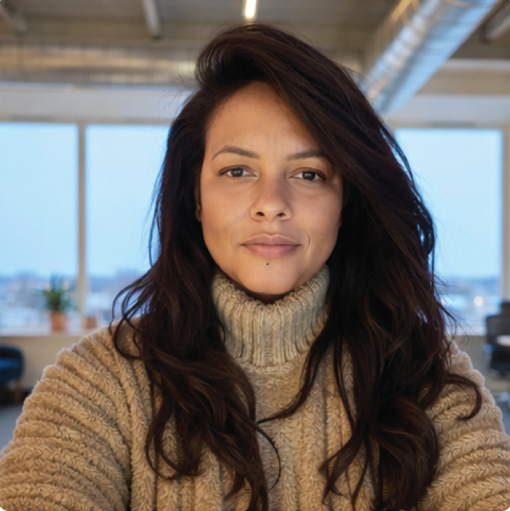

For over ten years, I've developed visual identities, brand systems, and creative projects, connecting strategy, image, and narrative. My work spans from creating brands and collections to developing experiences and original products.
Há mais de dez anos, desenvolvo identidades visuais, sistemas de marca e projetos criativos, conectando estratégia, imagem e narrativa. Meu trabalho vai da criação de marcas e coleções ao desenvolvimento de experiências e produtos autorais.
Sonho de Papel: Brands with stories worth telling. Sonho de Papel is the independent studio I founded, which became my great laboratory for design, product, and business over the past decade. It's where I learned to decode client psychology, interpret complex briefs, and manage the entire product lifecycle — from strategic sourcing and SEO optimization to the final technical handoff. More than crafting visual identities with sensitivity, I transformed stories into consistent, scalable brand ecosystems focused on generating real business results.
Sonho de Papel: Brands with stories worth telling. A Sonho de Papel é o estúdio independente que fundei e que se tornou meu grande laboratório de design, produto e negócios ao longo da última década. Foi aqui que aprendi a decodificar a psicologia dos clientes, interpretar briefings complexos e gerenciar todo o ciclo de vida do produto — desde a captação estratégica e otimização de SEO até o handoff técnico final. Mais do que criar identidades visuais com sensibilidade, transformei histórias em ecossistemas de marca consistentes, escaláveis e focados em gerar resultados de negócios reais.
See the case → Ver o case →The role of design has changed. We've stopped designing static answers and started designing intelligent systems, capable of evolving alongside the people who use them.
O papel do design mudou. Deixamos de projetar respostas estáticas para começar a desenhar sistemas inteligentes, capazes de evoluir junto com as pessoas que os utilizam.
The Brand Box: From uncertainty to creative clarity. The Brand Box was born to solve a classic scaling challenge: turning years of proprietary methodology and a design database into an intelligent SaaS platform. The product automates brand creation by combining artificial intelligence with a system of pre-approved visual rules. The platform guides users through a structured back-end questionnaire to map their psychographic profile and dynamically generate complete identity systems — including palettes, typography, exclusive patterns, brand manifesto, and tone of voice — while also delivering final packaging and stationery files ready for production.
The Brand Box: From uncertainty to creative clarity. O The Brand Box nasceu para resolver um desafio clássico de escala: transformar anos de metodologia proprietária e um banco de dados de design em uma plataforma SaaS inteligente. O produto automatiza a criação de marcas unindo Inteligência Artificial a um sistema de regras visuais pré-aprovadas. A plataforma guia o usuário por um fluxo de perguntas estruturado no back-end para mapear seu perfil psicográfico e gerar, dinamicamente, sistemas de identidade completos — incluindo paletas, tipografia, estampas exclusivas, manifesto de marca e tom de voz —, além de entregar os arquivos finais de embalagem e papelaria prontos para a produção.
See the case → Ver o case →Efficient interfaces are the ones that respect the time and cognitive load of the person on the other side of the screen. Good design is the kind that feels invisible.
Interfaces eficientes são aquelas que respeitam o tempo e a carga cognitiva de quem está do outro lado da tela. Bom design é aquele que parece invisível.
My Year, My Story: Helping people notice who they're becoming, one moment at a time. My Year, My Story marked my first hands-on immersion in programming and product intelligence, born from the challenge of adapting a published interactive physical book into the mobile environment. The project evolved from a playful dynamic into a mature memory keeper: a reflective diary structured chronologically by month and year. The platform encourages presence and future planning through guided prompts, using a back-end AI system that analyzes the user's writing patterns to automatically generate deep summaries and organize their memories into life chapters.
My Year, My Story: Helping people notice who they're becoming, one moment at a time. O My Year, My Story marcou minha primeira imersão prática em programação e inteligência de produto, nascendo do desafio de transpor um livro interativo físico publicado para o ambiente mobile. O projeto evoluiu de uma dinâmica lúdica para um guardião de memórias maduro: um diário reflexivo estruturado de forma cronológica por meses e anos. A plataforma incentiva o exercício de presença e o planejamento do futuro por meio de perguntas direcionadas, utilizando um sistema de Inteligência Artificial no back-end que analisa os padrões de escrita do usuário para gerar automaticamente resumos profundos e organizar suas memórias em capítulos de vida.
See the case → Ver o case →Technical structure brings function, but it's visual consistency that builds connection. Design happens at the exact point where logic and sensitivity meet.
A estrutura técnica traz a função, mas é a consistência visual que constrói a conexão. O design acontece no ponto exato onde a lógica e a sensibilidade se encontram.
Leve ao Mar: Turning imagination into tangible experiences. Leve ao Mar represents the fullest expression of my authorial signature, combining the freedom of digital illustration with the engineering of a product built for the physical world. Inspired by the visual energy, culture, and landscapes of my hometown, Rio de Janeiro, I developed the entire creative direction and the brand's modular pattern language. Beyond the aesthetics, the project operates as an automated, scalable e-commerce: I structured the platform on WooCommerce, implemented a dense SEO strategy for organic acquisition, and integrated an external API to automate the full print-on-demand production and shipping flow straight to the end customer.
Leve ao Mar: Turning imagination into tangible experiences. O Leve ao Mar representa a expressão máxima da minha assinatura autoral, unindo a liberdade da ilustração digital à engenharia de um produto focado no mundo físico. Inspirada pela energia visual, cultura e paisagens da minha cidade natal, o Rio de Janeiro, desenvolvi toda a direção criativa e a linguagem de padrões modulares da marca. Para além da estética, o projeto opera como um e-commerce automatizado e escalável: estruturei a plataforma em WooCommerce, implementei uma estratégia densa de SEO para aquisição orgânica e integrei uma API externa para automatizar o fluxo completo de produção e envio sob demanda (print-on-demand) direto para o cliente final.
See the case → Ver o case →
Designing products is about finding order in chaos. It's turning complex flows into journeys that feel obvious, natural, and fluid.
Projetar produtos é encontrar ordem no caos. É transformar fluxos complexos em jornadas que parecem óbvias, naturais e fluidas.
Visual Explorations & Art Direction: Crafting consistency and identity. This gallery brings together visual studies, patterns, and design applications focused on translating concepts into applied aesthetic solutions. The projects explore the fundamental relationships of visual hierarchy, typographic weight, legibility, and color behavior across different surfaces. Each piece is a practical exercise in originality and consistency, focused on understanding how a single identity language unfolds with technical precision across multiple formats and physical reproduction methods.
Visual Explorations & Art Direction: Crafting consistency and identity. Esta galeria reúne estudos visuais, estampas e aplicações de design voltados para a tradução de conceitos em soluções estéticas aplicadas. Os projetos exploram as relações fundamentais de hierarquia visual, peso tipográfico, legibilidade e comportamento das cores em diferentes superfícies. Cada peça é um exercício prático de originalidade e consistência, focado em entender como uma mesma linguagem de identidade se desdobra com precisão técnica em múltiplos formatos e métodos de reprodução física.

Hi, I'm Cintia.
Oi, sou a Cintia.
I'm a Brazilian visual designer based in Norway. Instead of designing isolated solutions, I spend my days building systems — whether structuring an AI-guided branding platform, designing an app's flow, or developing a collection of original patterns.
I believe in design that unites logic, aesthetics, and functionality to simplify processes and bring to life ideas that truly need to exist.
When I'm not designing interfaces or organizing visual identities, I'm probably exploring new landscapes or creating art inspired by my roots.
Sou uma designer visual brasileira baseada na Noruega. Em vez de projetar soluções isoladas, passo meus dias criando sistemas — seja estruturando uma plataforma de branding guiada por IA, desenhando o fluxo de um aplicativo ou desenvolvendo uma coleção de estampas autorais.
Acredito no design que une lógica, estética e funcionalidade para descomplicar processos e dar vida a ideias que realmente precisam existir.
Quando não estou desenhando interfaces ou organizando identidades visuais, provavelmente estou explorando novas paisagens ou criando arte inspirada nas minhas raízes.